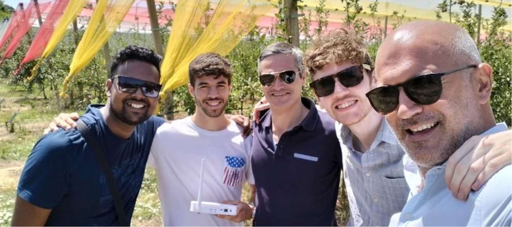

Company
Sociedade Agricola Casal da Cotovia, Lda
Its family owned grower of Blueberries. It operates 100% under organic agriculture principles
and certifications. It has a strong compromise with sustainability: environmental, social and
economical.
INIAV is the State Laboratory, in the area of competences of Agriculture, Forestry and Rural
Development, which develops research activities in the agronomic and veterinary areas,
https://www.iniav.pt/.
Project breif description
- Efficient use of water and zero-waste agriculture
- Develop a low-cost digital assistant to farmers looking to be more sustainable and ethical.
- Object is to develop an integrated system compesed of:
- meteorological stations
- connection to public weather forecasting platforms
- soil moisture sensors: reliable, low cost, with long-distance radio communication, with low energy consumption
- fertilizer sensors in the soil: reliable, low cost, with long distance radio communication, with low energy consumption
- electro conductivity sensors of water and wastewater
- flow and pressure sensors in irrigation ducts
- water level sensors in tanks, ponds and wells
- server with A.I. algorithm that "learns", improving its performance with each cycle and each iteration
- Able to manage the use of water, watering and fertigation. Providing visual maps of the farm with: production, amount of water and fertilizers used, etc.
Contact Detail
- Contact Person: Filipe Sampaio Rodrigues
- Mail: Sampaio.rodrigues@gmail.com